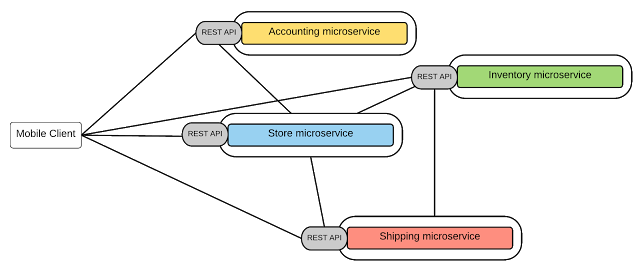

微服务架构介绍
微服务架构（Microservice Architecture）是一种架构概念，旨在通过将功能分解到各个离散的服务中以实现对解决方案的解耦，将功能分解到离散的各个服务当中，从而降低系统的耦合性，并提供更加灵活的服务支持。
传统开发模式和微服务的区别
优点
- 开发简单，集中式管理
- 基本不会重复开发
- 功能都在本地，没有分布式的管理和调用消耗
缺点
- 效率低：开发都在同一个项目改代码，相互等待，冲突不断
- 维护难：代码功功能耦合在一起，新人不知道何从下手
- 不灵活：构建时间长，任何小修改都要重构整个项目，耗时
- 稳定性差：一个微小的问题，都可能导致整个应用挂掉
- 扩展性不够：无法满足高并发下的业务需求
微服务架构特征
官方的定义
- 一系列的独立的服务共同组成系统
- 单独部署，跑在自己的进程中
- 每个服务为独立的业务开发
- 分布式管理
- 非常强调隔离性
大概的标准
- 分布式服务组成的系统
- 按照业务，而不是技术来划分组织
- 做有生命的产品而不是项目
- 强服务个体和弱通信（ Smart endpoints and dumb pipes ）
- 自动化运维（ DevOps ）
- 高度容错性
- 快速演化和迭代
SOA和微服务的区别
- SOA喜欢重用，微服务喜欢重写
- SOA喜欢水平服务，微服务喜欢垂直服务
- SOA喜欢自上而下，微服务喜欢自下而上
微服务架构当中的多个要素
1.服务注册、服务发现和变更下发(Eureka、ZooKeeper等)
2.服务与服务之间的调用方式（同步、异步、REST、RPC、Dubbo、消息队列......）
3.客户端对服务的访问方式(包括直接访问和API Gateway，API Gateway可以实现权限控制、负载均衡和错误转移)
4.数据的去中心化管理（完全隔离的业务数据库+中心数据库的架构）
5.权限的中心化管理（Redis+spring-security oauth、SSO）
6.使用分布式事务、分布式锁或TICKET幂等保证并发安全
7.中间件（消息队列、RPC、读写分离中间件、分库分表中间件、缓存中间件、权限认证中间件、分布式session......）
8.高效缓存（一致性哈希）
9.负载均衡、故障转移和服务熔断机制（Ribbion&Feign、Hytrix）
10.服务监控和服务管理（dubbo和spring cloud两套体系都提供了自己的服务监控和管理平台）
11.日志监控和日志管理（Logstash + kibana+ElasticSearch）
12.devops(自动化运维）
13.持续集成部署（K8S & Docker）
.......
注意：java界当中，微服务架构的两大典型框架是dubbo和spring cloud。可以通过学习这两个框架，从而掌握微服务-分布式架构中的多个点
在这儿挑几个重要的讲讲
1.服务注册、服务发现和变更下发
服务注册、服务发现和服务的变更下发是服务治理的基本功能。
要想实现这种功能，必须进行服务配置信息的存储、协同等工作。
好在已经有两款著名的分布式协作框架可以帮助我们构建，那就是ZooKeeper和Eureka。
更一般的情况，我们直接使用Dubbo或者spring cloud，通过简单配置，我们就能够直接享受这种功能。
2.服务与服务之间的调用方式
服务于服务之间的调用方式按照等待方式可以分为两种：
同步：REST API和大部分的RPC框架，前者以spring cloud为典型，后者以dubbo为典型。
异步：消息队列（RabbitMQ）或者CRON(Elastic-Job），spring cloud对这两者都有很好的框架性支持，dubbo只能手动集成第三方。
严格的说，按照Marting Flower对微服务的描述，服务与服务之间、服务和客户端之间同步调用都应该采用REST API通讯。
3.客户端对服务的访问方式
第一种方式是客户端直接调用服务，现在已经不常用了，如下：

第二种方式是在后台N个服务和UI之间一般会有一个代理或者叫API Gateway，如下图所示：

API Gateway的作用：
- 提供统一服务入口，让微服务对前台透明
- 聚合后台的服务，节省流量，提升性能
- 提供中心化的安全认证，请求过滤，流控等API管理功能
- 在Gateway处可以很方便的实现负载均衡和故障转移。
4.数据的去中心化管理
单体架构中，不同功能的服务模块都把数据存储在某个中心数据库中,如下：

微服务方式，多个服务之间的设计相互独立，数据也应该相互独立（比如，某个微服务的数据库结构定义方式改变，可能会中断其它服务），因此，每个微服务都应该有自己的私有业务数据库，也可能会有公共的中心数据库。

数据去中心化的核心要点：
- 每个微服务有自己私有的数据库持久化业务数据
- 每个微服务只能访问自己的数据库和中心数据库，而不能访问其它服务的数据库
- 某些业务场景下，需要在一个事务中更新多个数据库。这种情况也不能直接访问其它微服务的数据库，而是通过对于微服务进行操作。
数据的去中心化，进一步降低了微服务之间的耦合度，不同服务可以采用不同的数据库技术（SQL、NoSQL等）。
5.权限的中心化管理
用户认证和资源授权是应用系统中不得不谈论的话题，对于微服务系统，因为系统多而细，因此必须要使用中心化的权限认证管理。
一般而言有如下两种方案：
（1）基于spring security oauth2的token认证，使用Redis作为token存储介质。
（2）SSO登录。
6.使用分布式事务、分布式锁或TICKET幂等保证并发和数据安全
分布式事务相关链接：
分布式锁相关链接：
TICKET幂等：
7.中间件
消息队列、RPC、读写分离中间件、分库分表中间件、作业中间件、缓存中间件、权限认证中间件、分布式session......）
消息队列：RabbitMQ，ApacheMQ,Kafka .....
RPC：dubbo(多种协议），Thrift，RMI，soap（webservices）等等。
读写分离中间件：sharding-jdbc
缓存中间件：Ehcache、Memory-cache、Redis
作业中间件：Elastic-job
权限认证中间件：JWT、spring security 、spring security oauth
分布式Session：Session同步、粘性Session、基于缓存服务器的session共享，如下图所示：

8.高效缓存
一致性哈希具有单调性，可以避免服务器变更对缓存的影响，还可以通过使用虚拟机节点调节每台物理缓存机器所承受的权重。
参考： 一致性哈希算法
9.负载均衡、故障转移和服务熔断机制
故障转移：待总结
服务熔断： Spring Cloud熔断器 Hystrix
10.服务监控和日志管理
dubbo和spring cloud两套体系都提供了自己的服务监控和管理平台
参见： 监控与管理dubbo服务
11.日志监控和日志管理
日志监控和日志管理一方面是可以通过日志监视和统计微服务系统中各个组件的健康状态，统计bug数量等等
另外一个方面是基于全文搜索，可以给开发人员提供一个中心化的日志查看和搜索平台，从而提高开发和维护效率。
经典Logstash + kibana+ElasticSearch：
微服务架构的优缺点
- 优点
复杂度可控，独立按需扩展，技术选型灵活，容错，可用性高 - 缺点
多服务运维难度，系统部署依赖，服务间通信成本，数据一致性，系统集成测试，重复工作，性能监控等
微服务架构的思考
微服务对我们的思考，更多的是思维上的转变。对于微服务架构：技术上不是问题，意识比工具重要。
关于微服务的几点设计出发点：
- 应用程序的核心是业务逻辑，按照业务或客户需求组织资源（这是最难的）
- 做有生命的产品，而不是项目
- 头狼战队，全栈化
- 后台服务贯彻Single Responsibility Principle（单一职责原则）
- VM->Docker （to PE）
- DevOps (to PE)
最后，一般提到微服务都离不开DevOps和Docker，理解微服务架构是核心，devops和docker是工具，是手段